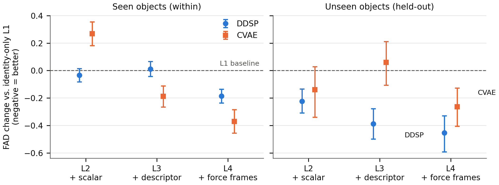
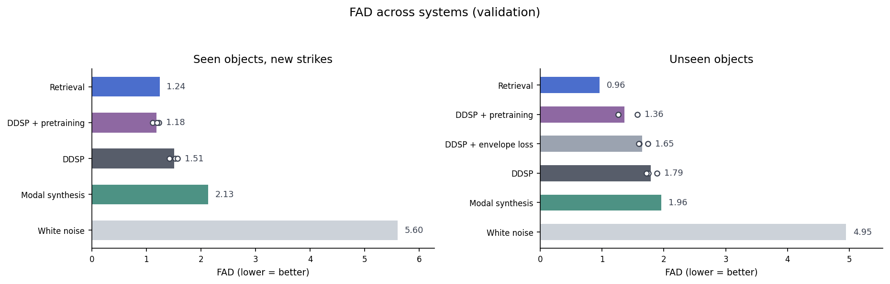
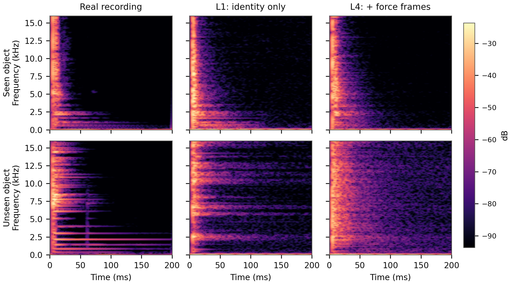

1 · Main measurement (test set)

| Force conditioning | Seen objects (within) | Unseen objects (held-out) | ||
|---|---|---|---|---|
| DDSP | CVAE | DDSP | CVAE | |
| L1 identity only | 1.58 ± 0.76 | 3.26 ± 0.78 | 2.27 ± 0.42 | 3.28 ± 0.48 |
| L2 + peak-force scalar | 1.55 ± 0.78 | 3.53 ± 0.93† | 2.04 ± 0.38* | 3.14 ± 0.46 |
| L3 + 6-D force descriptor | 1.60 ± 0.83 | 3.07 ± 0.75* | 1.88 ± 0.46* | 3.34 ± 0.55 |
| L4 + time-resolved force frames | 1.40 ± 0.70* | 2.89 ± 0.71* | 1.82 ± 0.48* | 3.02 ± 0.38* |
Object-level FAD (VGGish), mean ± s.d. across objects; lower is better; best per column in bold. *: significantly better than L1; †: significantly worse (paired bootstrap over objects, Holm-corrected). L1 = 16-D identity embedding: per-object on the seen split, per-material on the unseen split. For the CVAE on seen objects, coarse force information can hurt when identity already carries it.
2 · Statistical protocol and design resolution
Comparisons use paired bootstrap over objects (2,000 resamples) with Holm correction; objects, not clips, are the resampling unit. The primary metric is object-level FAD (VGGish embeddings).
The design's minimum detectable effect is ≈6–11% of baseline FAD, estimated from the noise between five identically configured baseline runs (split-half comparisons of runs that differ only in random initialisation give a null-effect noise level; the detection threshold follows from it): the range spans single-run and pooled estimates, with the pooled point at ≈7% of baseline FAD at 70% power. On the DDSP generator, seen-object summary effects are at most ≈2% of baseline — below this resolution — so these nulls indicate no detected gain, not absence of effect. The CVAE's seen-object summary effects lie at or above this resolution: a moderate gain for the descriptor and a significant degradation for the scalar — plausibly a finite-data effect, since identity already carries the information and, with about 26 training strikes per object, there may be too little data to reliably discount the one-dimensional input.
3 · Robustness of the main comparison
Second encoder. The DDSP L4−L1 comparison replicates under CLAP embeddings: seen d = −0.30, unseen d = −1.53 (d = Cohen's d of the paired per-object difference), both intervals excluding zero.
Force-shuffle control (validation split). Feeding the trained L4 model shuffled (mismatched) force windows at evaluation degrades FAD in every run: aggregate Δ = +0.050, 95% CI [+0.028, +0.071], d = 0.47, 68% of objects worse; the criterion is the paired 95% interval excluding zero.
| Model run | FAD, correct force | FAD, shuffled force | Δ (shuffled − correct) |
|---|---|---|---|
| run 1 | 1.525 | 1.545 | +0.020 |
| run 2 | 1.422 | 1.480 | +0.058 |
| run 3 | 1.574 | 1.616 | +0.043 |
| run 4 | 1.199 | 1.273 | +0.074 |
| run 5 | 1.141 | 1.194 | +0.053 |
4 · Descriptor controls: construction and results
The seen-object null for coarse summaries (DDSP) survives three alternative extractions, so it is not an artefact of descriptor choice:
- Corrected re-extraction. Two of the original six dimensions are physically unreliable on this data — contact often lasts under a millisecond, so the pulse width collapses onto the 48 kHz sampling grid for roughly half the strikes, and the decay-constant fit is degenerate for ≈9% of strikes. Descriptors re-extracted with corrected definitions reproduce the null.
- Budget-matched alternatives. Alternative six-number summaries under the same dimensionality, scaling and training-split statistics also reproduce it.
- PCA-6 summary. A six-dimensional linear projection fitted on training force windows only — the variance-optimal six-number summary. The force frames beat even this summary: d = −0.99 (Δ = −0.30; VGGish, seen objects, DDSP, test set).
Information view. Predicting the actual L4 input (300 frames × 2 channels) from each summary, fitted on training strikes and scored on validation: amplitude is recoverable (R² 0.75–0.84); temporal shape only partially (0.20–0.62 linear), and least by the summaries used in L2/L3 (0.20 and 0.39).
| Summary | R² raw curve (linear) | R² temporal shape (linear) | R² temporal shape (quadratic) |
|---|---|---|---|
| Peak scalar (1-D) | 0.75 | 0.20 | 0.30 |
| Original 6-D descriptor | 0.77 | 0.39 | 0.52 |
| Corrected core set (3-D: peak, contact duration, asymmetry) | 0.77 | 0.53 | 0.59 |
| Corrected 6-D descriptor | 0.84 | 0.62 | 0.72 |
How much of each descriptor dimension identity already carries (share of variance explained by per-object identity; training strikes, seen split):
| Descriptor dimension | R² from identity |
|---|---|
| Peak force | 0.62 |
| Pulse width (FWHM) | 0.13 |
| Bounce count | 0.51 |
| Max bounce ratio | 0.55 |
| Decay constant | 0.29 |
| Asymmetry | 0.67 |
Pulse width (0.13) and decay (0.29) are the dimensions least explained by identity. Both analyses use force inputs only — no model outputs, no test data.
5 · Reference systems (validation split)

| System | Seen objects (within) | Unseen objects (held-out) |
|---|---|---|
| White-noise reference | 5.60 | 4.95 |
| Modal synthesis (SAMPLE) | 2.13 | 1.96 |
| Retrieval (closest-force training recording) | 1.24 | 0.96 |
| DDSP (L4) | 1.51 | 1.79 |
| + envelope loss | — | 1.65 |
| + synthetic-IR pretraining | 1.18 | 1.36 |
All learned systems conditioned on L4. Retrieval returns the training recording with the closest impact force; on unseen objects it can only return other objects' recordings, so its low FAD partly reflects the advantage of emitting real recordings — a reference floor, not a viable system. The modal baseline is built on the open-source SAMPLE package with the same information budget as the learned models (recordings + measured force; no geometry). Section 1 reports the test set; this section reports the validation split, with one exception: the white-noise reference is a test-set value. The learned rows are the mean over seeds 42–44. "—" marks a split on which a variant was not trained: the envelope-loss variant was trained on the held-out split only — it targets the ringing artefact on unseen objects, where the generated decay tail comes out as sustained broadband noise instead of the recording's tonal modal decay (Sec. 9, Figure C, unseen row).
6 · Training improvements (DDSP; validation, three runs per cell)
Envelope loss. The multi-resolution STFT loss is nearly blind to decay shape: disabling the modal branch changes the training loss by only ≈1% while the ringing artefact persists. Adding an envelope-L1 term (weight 8.8, chosen from a validation-split sweep) improves FAD by 7.2–8.5% at a 6.7% training-loss cost and moves tail energy toward the real value (tail-energy index — mean RMS envelope over the 100–200 ms tail of the 200 ms window, divided by the envelope peak — 0.09 → 0.10; real recordings 0.12).
Synthetic-impulse-response pretraining. Pretraining on a fully synthetic corpus — random decaying noise bursts convolved with 2,000 simulated room impulse responses, the burst doubling as the force input — then fine-tuning on real data improves FAD by 19–24% (seen) and 17–28% (unseen), the largest gain in this study. The pretrained model without fine-tuning is far worse than every baseline (FAD 4.20): the gain is the synthetic prior plus brief fine-tuning.
7 · Encoder robustness of the pretraining comparison (validation)
Does the improvement from synthetic pretraining (Section 6) survive a change of encoder and of distance? Each cell is the per-run change in distribution distance between the pretrained + fine-tuned model and the no-pretraining model trained with the same random seed (negative = improvement). The same comparison is shown under two aggregations: Table 7a uses the paper's object-level aggregation; Table 7b uses the set-level aggregation, which is the standard definition of FAD in the literature.
Green = distance decreased after pretraining (improvement); red = increased (worse). Runs 1–3 are three trainings that differ only in random initialisation.
How each cell is computed. Each validation clip is embedded once — VGGish and CLAP with the paper's own pipeline, PANNs, PaSST, EnCodec and OpenL3 with the kadtk toolchain — and generated is compared with real under two distances (Fréchet, and the kernel distance KAD) and two aggregations: object-level, the distance per object between its generated and its own real clips, averaged over objects as in the paper; set-level, one distance over all clips of the split, kadtk's convention. The cell shows the percentage change from pretraining; a row counts as robust when all three runs are negative.
Why the percentages differ between the two tables. With 4–10 (seen) or 15–25 (unseen) clips per object, each per-object distance contains a small-sample floor that neither model can remove. Measured on real recordings against themselves (two random halves of each object's real clips, VGGish features as in the paper), that floor is ≈27% of the no-pretraining score at object level versus ≈8% at set level (unseen objects, run 1; a small-sample floor diagnostic). The floor dilutes object-level percentages, so the same improvement reads smaller at object level. Compare sizes within a table, not across the two tables; directions are comparable everywhere.
The tables use the paper's VGGish feature space. For seen objects with the two high-dimensional encoders (PANNs 2048-d, PaSST 1295-d; 488 clips, fewer than the embedding dimension) the set-level Fréchet values are numerically unstable; directions and the kernel distance are unaffected.
Table 7a — object-level aggregation (as in the paper).
| Encoder | Distance | Seen objects (within) | Unseen objects (held-out) | ||||
|---|---|---|---|---|---|---|---|
| run 1 | run 2 | run 3 | run 1 | run 2 | run 3 | ||
| VGGish (paper's own pipeline) | Fréchet | -19.3% | -21.3% | -24.1% | -28.1% | -26.8% | -16.7% |
| CLAP (paper's own pipeline) | Fréchet | -22.9% | -34.9% | -46.4% | -37.2% | -49.1% | -45.2% |
| PANNs (Wavegram-LogMel) — toolchain embeddings, recomputed per object | Fréchet | -28.0% | -35.9% | -39.0% | -31.8% | -43.9% | -43.1% |
| PANNs (Wavegram-LogMel) — toolchain embeddings, recomputed per object | kernel (KAD) | -37.5% | -45.2% | -46.6% | -34.7% | -43.6% | -39.2% |
| PaSST — toolchain embeddings, recomputed per object | Fréchet | -7.3% | -23.0% | -39.8% | -17.6% | -44.1% | -30.2% |
| PaSST — toolchain embeddings, recomputed per object | kernel (KAD) | -11.8% | -34.7% | -51.1% | -16.9% | -43.4% | -28.2% |
| EnCodec — toolchain embeddings, recomputed per object | Fréchet | -7.4% | +3.9% | -23.4% | -6.4% | -24.9% | -9.5% |
| EnCodec — toolchain embeddings, recomputed per object | kernel (KAD) | -11.1% | -18.6% | -42.7% | -4.3% | -17.3% | -12.6% |
| OpenL3 — toolchain embeddings, recomputed per object | Fréchet | +2.3% | 0.0% | -3.8% | -18.7% | -13.3% | -12.0% |
| OpenL3 — toolchain embeddings, recomputed per object | kernel (KAD) | +5.2% | +2.9% | -7.1% | -20.7% | -16.6% | -9.2% |
Table 7b — set-level aggregation (literature standard).
| Encoder | Distance | Seen objects (within) | Unseen objects (held-out) | ||||
|---|---|---|---|---|---|---|---|
| run 1 | run 2 | run 3 | run 1 | run 2 | run 3 | ||
| PANNs (Wavegram-LogMel) | Fréchet | -42.5% | -60.0% | -61.5% | -64.4% | -75.8% | -76.8% |
| PANNs (Wavegram-LogMel) | kernel (KAD) | -66.6% | -72.9% | -69.1% | -63.7% | -74.0% | -73.5% |
| PaSST | Fréchet | +3.9% | -38.0% | -51.7% | -30.1% | -58.0% | -40.2% |
| PaSST | kernel (KAD) | +4.3% | -43.7% | -51.0% | -33.4% | -59.6% | -35.2% |
| EnCodec | Fréchet | -31.9% | -8.4% | -46.8% | -41.0% | -58.9% | -56.8% |
| EnCodec | kernel (KAD) | -86.3% | -67.8% | -88.8% | -19.9% | -69.7% | -38.0% |
| OpenL3 | Fréchet | +3.7% | -0.1% | -7.6% | -27.2% | -20.9% | -14.7% |
| OpenL3 | kernel (KAD) | +34.2% | +22.7% | +14.1% | -28.8% | -30.0% | -0.7% |
Where the two aggregations disagree on whether a row is robust.
- PaSST, seen objects, Fréchet distance: object-level all three runs improve (-7%/-23%/-40%); set-level not all runs improve (+4%/-38%/-52%).
- PaSST, seen objects, kernel distance: object-level all three runs improve (-12%/-35%/-51%); set-level not all runs improve (+4%/-44%/-51%).
- EnCodec, seen objects, Fréchet distance: object-level not all runs improve (-7%/+4%/-23%); set-level all three runs improve (-32%/-8%/-47%). Under the kernel distance all runs improve at both levels.
In the other 13 of 16 toolchain cells (encoder × split × distance) the robust / not-robust outcome is the same under both aggregations. On unseen objects every toolchain cell is robust under both aggregations; the disagreements are all on seen objects, where the improvement is smaller.
Caveats.
- OpenL3, seen objects: no robust improvement under either aggregation — the kernel distance is reversed at set level in all runs and in two of three runs at object level; the Fréchet distance is mixed under both.
- OpenL3, unseen objects, kernel distance: at set level one run improves only marginally (−0.7%); at object level the same run improves by ≈9%.
Excluded.
- PANNs (CNN14): near-degenerate embeddings for 200 ms clips — absolute distances sit on a ≈10⁻⁴ floor, so percentage changes carry no meaning; the encoder is excluded.
8 · Signal-domain metrics (descriptive)
Reported without significance tests: the paper's envelope metric (L1 between log-mel energy envelopes) improves with force granularity (seen 0.0595 → 0.0565, unseen 0.1046 → 0.0930); per-clip log-spectral distance improves with granularity on unseen objects (11.65 → 10.12 dB) and is slightly worse on seen objects (6.98 → 7.13 dB). The "envelope shape" column in the tables below is a different quantity — L1 between peak-normalised loudness envelopes — so the two are not comparable.
Per-clip descriptor differences
How to read these tables. For every test clip we compute a set of standard audio descriptors on the real recording and on the generated version, and report the absolute difference, averaged per object and then over objects (the same aggregation as the FAD tables); mean ± SD across the five training runs. All signals are peak-normalised per clip first, so every column is independent of loudness. Lower = the generated clip's descriptor is closer to the real one. The descriptors: spectral centroid and bandwidth describe where the energy sits and how spread it is; spectral flatness and contrast describe how tone-like versus noise-like the spectrum is (a proxy for harmonic structure); the MFCC distance summarises overall timbre (coefficients 1–13, loudness coefficient excluded); envelope shape is the L1 distance between the peak-normalised loudness envelopes; T20 is the time for the envelope to fall 20 dB below its peak, and the column shows the difference in that decay time. The real vs real row is the floor: two random halves of the same object's real strikes compared the same way — differences at or below this row are indistinguishable from natural strike-to-strike variability.
DDSP generator. On seen objects the differences sit at or below the real-vs-real floor for most descriptors and barely change across conditioning levels. On unseen objects every descriptor sits above the floor at L1 and moves toward it as force information is added — spectral centroid 1,603 → 1,156 Hz (floor 914), MFCC distance 48 → 42 (floor 28), decay-time difference 39 → 33 ms (floor 33) — except spectral flatness, which stays at ≈4.4 dB against a floor of 2.5 dB at every level: the tone-versus-noise character of an unseen object is the one descriptor that force information does not improve.
Seen objects (within) (488 clips, 100 objects).
| Force conditioning | spectral centroid (Hz) | spectral bandwidth (Hz) | spectral flatness (dB) | spectral contrast (dB) | MFCC distance | envelope shape (L1) | decay time T20 (ms) |
|---|---|---|---|---|---|---|---|
| L1 identity only | 684 ± 4.7 | 565 ± 7.8 | 2.76 ± 0.11 | 1.64 ± 0.068 | 21.4 ± 0.24 | 0.0968 ± 0.00083 | 25.9 ± 0.47 |
| L2 + peak-force scalar | 695 ± 21 | 587 ± 8.7 | 2.65 ± 0.094 | 1.69 ± 0.077 | 21.9 ± 0.23 | 0.0961 ± 0.001 | 27.5 ± 0.67 |
| L3 + 6-D descriptor | 766 ± 25 | 626 ± 33 | 2.68 ± 0.058 | 1.82 ± 0.11 | 23.4 ± 0.62 | 0.101 ± 0.0027 | 31.2 ± 2 |
| L4 + force frames | 800 ± 66 | 679 ± 110 | 2.78 ± 0.26 | 1.62 ± 0.15 | 22.4 ± 0.7 | 0.096 ± 0.0034 | 26.6 ± 3.1 |
| Real vs real (split-half floor) | 875 ± 44 | 599 ± 26 | 2.98 ± 0.085 | 1.22 ± 0.045 | 25.8 ± 0.53 | 0.118 ± 0.0028 | 29.2 ± 0.8 |
Unseen objects (held-out) (308 clips, 17 objects).
| Force conditioning | spectral centroid (Hz) | spectral bandwidth (Hz) | spectral flatness (dB) | spectral contrast (dB) | MFCC distance | envelope shape (L1) | decay time T20 (ms) |
|---|---|---|---|---|---|---|---|
| L1 identity only | 1,603 ± 31 | 1,412 ± 49 | 4.41 ± 0.3 | 5.17 ± 0.1 | 48.4 ± 0.17 | 0.112 ± 0.0041 | 39.3 ± 2.3 |
| L2 + peak-force scalar | 1,315 ± 54 | 1,366 ± 78 | 4.97 ± 0.099 | 4.94 ± 0.051 | 45.9 ± 0.48 | 0.115 ± 0.0052 | 35.2 ± 3 |
| L3 + 6-D descriptor | 1,161 ± 34 | 1,016 ± 100 | 4.6 ± 0.31 | 4.66 ± 0.15 | 43.5 ± 0.57 | 0.117 ± 0.008 | 36 ± 4 |
| L4 + force frames | 1,156 ± 37 | 946 ± 49 | 4.4 ± 0.23 | 4.48 ± 0.13 | 41.5 ± 0.51 | 0.104 ± 0.0024 | 32.7 ± 1 |
| Real vs real (split-half floor) | 914 ± 64 | 611 ± 22 | 2.54 ± 0.11 | 1.24 ± 0.055 | 27.8 ± 0.53 | 0.103 ± 0.0044 | 32.6 ± 2.6 |
Mel-spectrogram CVAE. Both real and generated clips pass through the same mel inversion (the evaluation convention for this model), and the real-vs-real floor above is computed on raw recordings, so the floor is only an approximate reference here. The CVAE sits far above the DDSP generator on every descriptor, with much larger run-to-run spread; its per-level tables are not shown.
Descriptive only; no significance tests.
9 · Audio examples
The clips labelled real are 200 ms, peak-normalised excerpts from the ObjectFolder-Real dataset (Gao et al., CVPR 2023; © Stanford Vision and Learning Lab), reproduced here for comparison under the ObjectFolder project's CC BY 4.0 license. The dataset itself is not redistributed; obtain it from the ObjectFolder project page. All other clips are model outputs.

Listen to the exact examples in Figure C, plus the best and worst cases. Rows are ranked by per-clip log-spectral distance (LSD) of the L4 generation (first run) against the real recording, over every test clip of the split; the median rows are the two examples shown in Figure C. Each clip is peak-normalised for listening, whereas the spectrograms share one dB scale, so level differences visible in the figure are not audible:
| Real recording | L1: identity only | L4: + force frames | |
|---|---|---|---|
| Seen — best (LSD 2.87 dB) | |||
| Seen — median (LSD 7.16 dB), Figure C top | |||
| Seen — worst (LSD 13.84 dB) | |||
| Unseen — best (LSD 4.59 dB) | |||
| Unseen — median (LSD 10.34 dB), Figure C bottom | |||
| Unseen — worst (LSD 22.30 dB) |
Further examples: system comparison per strike
Three further strikes per split. Each row plays the same strike through the learned systems and the modal baseline of the reference table: real recording, DDSP (L4), then — for unseen objects only — DDSP with the envelope loss, then modal synthesis and DDSP with pretraining. The envelope-loss column is shown for unseen objects, the split on which the variant was trained (Sec. 5).
Seen objects (within).
| Real recording | DDSP (L4) | Modal synthesis (SAMPLE) | DDSP + pretraining | |
|---|---|---|---|---|
| Example 1 | ||||
| Example 2 | ||||
| Example 3 |
Unseen objects (held-out).
| Real recording | DDSP (L4) | DDSP + envelope loss | Modal synthesis (SAMPLE) | DDSP + pretraining | |
|---|---|---|---|---|---|
| Example 1 | |||||
| Example 2 | |||||
| Example 3 |
Code and data
Code: github.com/BZFLL/force-conditioned-impact-sound — the two generators, the training code of the four-level grids and the descriptor ladder, the evaluation code and run configurations, and the result files behind Table 1, the reference systems, and the validation-split training-variant comparisons. ObjectFolder-Real is available from its authors' project page; the real recordings played on this page are from ObjectFolder-Real (Gao et al.), with attribution and licence stated in Sec. 9.